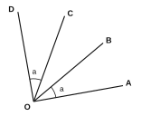
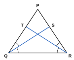

උපදෙස්: සියලුම ප්රශ්නවලට පිළිතුරු සපයන්න. සියලු ගණනය කිරීම් දී ඇති ඉඩෙහි පැහැදිලිව දක්වන්න.
එක් එක් ප්රතිඵලය ලබා ගැනීමට භාවිත කළ ප්රත්යක්ෂය ලියන්න.
(i) a = 5 හා b = 5, එබැවින් a = b. (ii) x = y, එබැවින් x + 3 = y + 3.
(iii) p = q, එබැවින් p – 7 = q – 7. (iv) m = n, එබැවින් 4m = 4n.
(v) 2a = 2b, එබැවින් a = b. (vi) සම්පූර්ණ කොමඩු ගෙඩියක ස්කන්ධය, එයින් කැපූ පෙත්තක ස්කන්ධයට වඩා විශාල වේ.
එක් එක් ප්රකාශය සම්පූර්ණ කර, භාවිත කළ ප්රත්යක්ෂය නම් කරන්න.
(i) a = b හා b = c නම්, a = ……
(ii) x = y නම්, x – z = ……
(iii) 3p = 3q නම්, p = ……
එක් එක් සමීකරණය විසඳන්න. සෑම පියවරකදීම භාවිත කළ ප්රත්යක්ෂය ලියන්න.
(i) x + 7 = 12 (ii) x/3 = 4 (iii) 5x – 4 = 21 (iv) 2(x + 3) = 18
A, B, C හා D යනු එම පිළිවෙළට සරල රේඛාවක් මත පිහිටි ලක්ෂ්ය වන අතර AB = CD වේ. ප්රත්යක්ෂයක් භාවිතයෙන් AC = BD බව පෙන්වන්න.
P, Q, R හා S යනු එම පිළිවෙළට සරල රේඛාවක් මත පිහිටි ලක්ෂ්ය වන අතර PR = QS වේ. ප්රත්යක්ෂයක් භාවිතයෙන් PQ = RS බව පෙන්වන්න.
රූපයේ OA, OB, OC හා OD යනු O සිට ඇඳි සරල රේඛා වන අතර AÔB = CÔD = a වේ. ප්රත්යක්ෂයක් භාවිතයෙන් AÔC = BÔD බව පෙන්වන්න.

PQR ත්රිකෝණයේ PQ̂R = PR̂Q වේ. QS මගින් PQ̂R ද RT මගින් PR̂Q ද සමච්ඡේදනය කෙරේ. ප්රත්යක්ෂයක් භාවිතයෙන් SQ̂R = TR̂Q බව පෙන්වන්න.

එක් එක් අවස්ථාව පැහැදිලි කරන ප්රත්යක්ෂය නම් කරන්න.
(i) නිමල් හා කමල් සතුව සමාන මුදල් ප්රමාණ තිබිණි. ඔවුන් දෙදෙනාටම තවත් රු. 200 බැගින් ලැබිණි. ඔවුන් සතුව තවමත් සමාන මුදල් ප්රමාණ ඇත.
(ii) සමාන දිගින් යුත් ලණු දෙකක් එකක් බැගින් සමාන කොටස් 4 කට කපනු ලැබේ. සියලු කොටස් සමාන දිගින් යුක්ත වේ.
(iii) පෙට්ටි දෙකක සමාන පෑන් ගණන් ඇත. එක් එක් පෙට්ටියේ පෑන් ගණන තුන් ගුණ කරනු ලැබේ. පෑන් ගණන් තවමත් සමාන වේ.
(i) ABC ත්රිකෝණයේ AB = AC හා AC = BC වේ. AB = BC බව පෙන්වා, භාවිත කළ ප්රත්යක්ෂය නම් කරන්න.
(ii) ABC කුමන වර්ගයේ ත්රිකෝණයක්ද?
(iii) A, B හා C සරල රේඛාවක් මත පිහිටි ලක්ෂ්ය වන අතර B පිහිටන්නේ A හා C අතරය. AC හා AB අතරින් විශාල කුමක්ද? ප්රත්යක්ෂය නම් කරන්න.
x = y හා y + 4 = 10 වේ. සෑම පියවරකදීම භාවිත කළ ප්රත්යක්ෂය නම් කරමින් x හි අගය සොයන්න.
චින්තන ප්රශ්නය: සිසුවෙක් මෙසේ ලිවීය: “0 × 5 = 0 හා 0 × 3 = 0, එබැවින් 0 × 5 = 0 × 3. දෙපසම 0 න් බෙදූ විට 5 = 3 ලැබේ.”
(i) සිසුවා භාවිත කිරීමට උත්සාහ කළේ කුමන ප්රත්යක්ෂයද?
(ii) නිගමනය වැරදි වන්නේ ඇයිදැයි පැහැදිලි කරන්න.